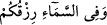
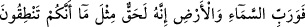

Selâm verdi, yanıma girdi ve yine o benden Zâriyât sûresini okumamı istedi. Okumaya
başladım. Aynı âyete yani
âyetine gelince “Biz Rabbimizin vaadini gerçek
olarak bulduk” diyerek bağırdı. Daha sonra: “Okumaya devam edebilir misin?” diye
ricâda bulununca
âyetini okudum. “Allah Allah!
Kim Allah’ı kızdıracak kadar O’nun sözüne inanmayıp O’nu yemine zorlar ve sonra da
kaseme rağmen O’na karşı vazifelerini yapmaz?!...” diye üç defa bağırdı, o esnada da
rûhunu teslim etti. Allah’tan tevekkül ve i’timad taleb ederiz.
[16]. Kurtubî, Neml Sûresi yedinci âyetin tefsirinde.
[17]. Aclûnî, II, 343.
[18]. İbn Kesir, IV, 235.
[19]. “Kaûd”, deve çobanının her iş için kullandığı bir deve cinsidir.